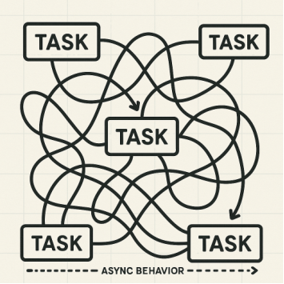
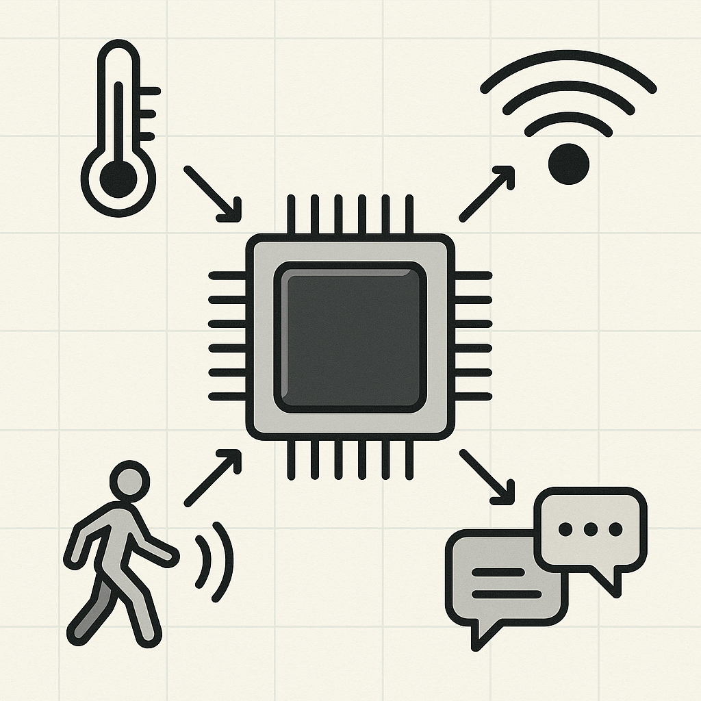
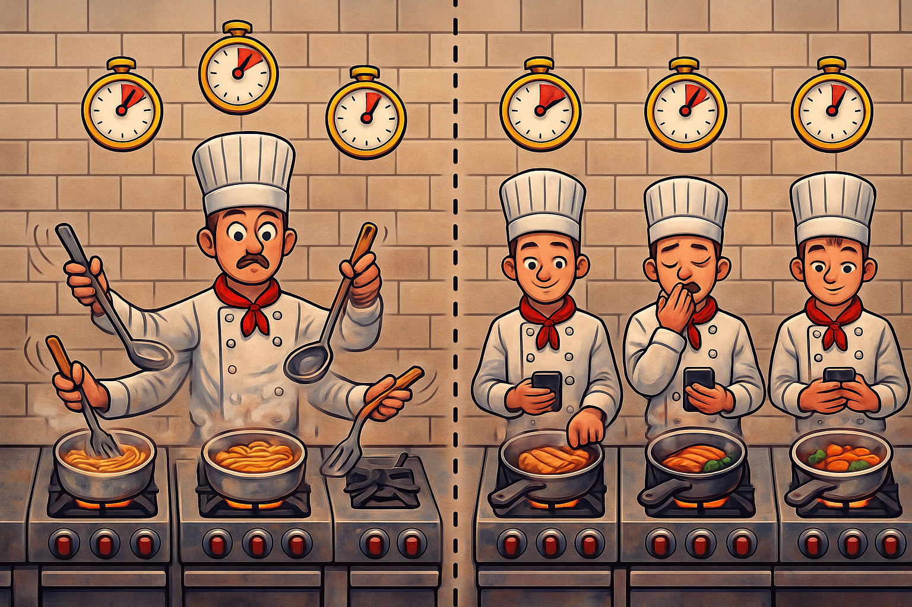
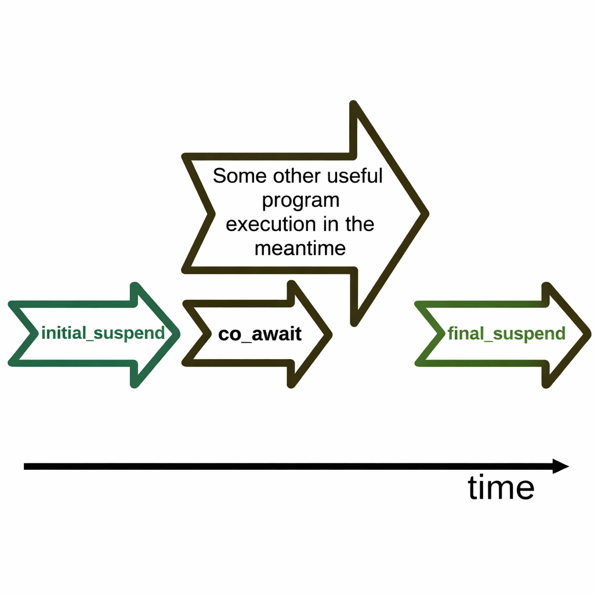

Vasyl Kuzmenko
2026
"A Diagrammatic Coroutine Cheat Sheet" by Andreas Weis, CppCon 2022

Event-driven model illustration
Almost always embedded application is event driven application

Typical embedded event-driven architecture

Abstraction with a Restaurant Kitchen
"If Writing C++ Coroutines Goes Over My Head, Where Do I Even Begin with Debugging?" by André Brand, ACCU Conference 2025

Coroutine jumps to back to caller function
Execution flow can be suspended and resumed
🔄 Coroutine → returns Handler → contains coroutine_handle → points to frame
Return type of coroutine
Wraps coroutine_handle
Object for co_await
await_ready, await_suspend, await_resume
Defines coroutine behavior
initial_suspend, final_suspend, get_return_object...
💡 Coroutine returns Handler → caller stores and manages it
Return type must have promise_type
nested class
class Handler {
public:
class promise_type {
// methods...
};
};or via using
class Handler {
public:
using promise_type = promise;
};
More detailed example: simple.cpp
coroutine — looks like a function
Handler hello() {
co_return; // ← makes it
} // a coroutine
int main() {
Handler h = hello();
// h manages lifetime
}✨ Any of these keywords makes a function a coroutine
co_await
Suspend until ready
→ returns value
co_yield
Produce value & pause
co_return
Complete & return
Defines coroutine behavior, lives inside the coroutine frame
initial_suspend()
Suspend at start?
final_suspend()
Suspend at end?
get_return_object()
Create TaskHandler
Object passed to co_await, controls how suspension happens
await_ready()
Skip suspension?
returns bool
await_suspend()
Called on suspension
receives coroutine_handle
await_resume()
Called on resume
returns value to co_await
⚠️ Abstract distinction
Receives data
and processes it
Produces data
on demand
await_suspend() returns
coroutine_handle<B>
coroutine_handle<> await_suspend(
coroutine_handle<> current) {
return next_coro; // B resumes, A stays suspended
}see: symmetric_transfer/advanced.cpp